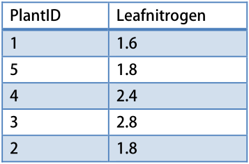

Chapter 3 Data skills
3.1 Introduction
Analysing data is much more than applying the right statistics at the right time. A lot of effort and time is spent on reading, filtering, reshaping, bending and twisting your data before you can actually use the data for visualization and analysis.
In this chapter we learn many skills for working with data in R. All of these skills can be seen as mandatory skills before you learn new statistical techniques or fancy new visualizations. We first look at reading datasets into dataframes, filtering data when certain conditions are met, and learn in detail about the most important data types that can be stored in dataframes.
We will also look at various ways to summarize data, from simple summaries of what is contained in the original data, to more complex tables of statistics by grouping variables. Finally we will look at merging (joining) dataframes by one or more key-variables, and reshaping datasets (from long to wide, and back).
Packages used in this chapter
The examples will generally let you know which packages are used, but for your convenience, here is a complete list of the packages used.
For plotting, we often use ggplot2 and ggthemes (these are usually omitted from the examples):
Otherwise:
lgrdata(for the example datasets, see 2.1.1)lubridate(for dates and times)dplyr(for various data skills)padr(for aggregating timeseries data)doBy(forsummaryBy, handy for making summary tables)Hmisc(forcontentsanddescribe, both summarize dataframes)tidyr(for reshaping dataframes)reshape2(for reshaping dataframes)data.table(forfread, fast reading of dataframes)readxl(for reading Excel files)stringr(for working with text)
3.2 Generating data
3.2.1 Sequences of numbers
Let’s look at a few ways to generate sequences of numbers that we can use in the examples and exercises. There are also a number of real-world situations where you want to use these functions.
First, as we saw already, we can use c() to ‘concatenate’ (link together) a series of numbers. We can also combine existing vectors in this way, for example:
a <- c(1,2,3)
b <- c(4,5,6)
c(a,b)## [1] 1 2 3 4 5 6We can generate sequences of numbers using :, seq and rep, like so:
# Sequences of integer numbers using the ":" operator:
1:10 # Numbers 1 through 10## [1] 1 2 3 4 5 6 7 8 9 105:-5 # From 5 to -5, backwards## [1] 5 4 3 2 1 0 -1 -2 -3 -4 -5# Examples using seq()
seq(from=10,to=100,by=10)## [1] 10 20 30 40 50 60 70 80 90 100seq(from=23, by=2, length=12)## [1] 23 25 27 29 31 33 35 37 39 41 43 45# Replicate numbers:
rep(2, times = 10)## [1] 2 2 2 2 2 2 2 2 2 2rep(c(4,5), each=3)## [1] 4 4 4 5 5 5The rep function works with any type of vector. For example, character vectors:
# Simple replication
rep("a", times = 3)## [1] "a" "a" "a"# Repeat elements of a vector
rep(c("E. tereticornis","E. saligna"), each=3)## [1] "E. tereticornis" "E. tereticornis" "E. tereticornis" "E. saligna"
## [5] "E. saligna" "E. saligna"3.2.2 Random numbers
We can draw random numbers using the runif function. The runif function draws from a uniform distribution, meaning there is an equal probability of any number being chosen.
# Ten random numbers between 0 and 1
runif(10)## [1] 0.8048764 0.1155593 0.6591333 0.7554428 0.6925971 0.9671985 0.5053061
## [8] 0.9216269 0.5886584 0.9994918# Five random numbers between 100 and 1000
runif(5, 100, 1000)## [1] 555.1091 583.5694 714.5387 897.6285 752.8683runif function is part of a much larger class of functions, each of which returns
numbers from a different probability distribution. Inspect the help pages of the functions rnorm
for the normal distribution, and rexp for the exponential distribution. Try generating some data from a normal distribution with a mean of 100, and a standard deviation of 10.
Next, we will sample numbers from an existing vector.
numbers <- 1:15
sample(numbers, size=20, replace=TRUE)## [1] 5 14 6 10 9 5 12 9 6 15 4 14 12 12 14 15 10 11 1 10This command samples 20 numbers from the numbers vector, with replacement.
3.3 Reading data
There are many ways to read data into R, but we are going to keep things simple and show only a couple of options to read data from text files, and from databases (hosted online).
Throughout this book we focus on ‘rectangular data’, that is, data that can be organized in a table with columns and rows. A data table like this, with individual observations in rows, and various data fields in columns, is called a data frame.
We first show a few options to read text files into dataframes in R, including comma, tab-delimited, and JSON formats, and how to read data from Excel. Reading data from remote (No)SQL databases is included in Chapter 7.
3.3.1 Reading CSV files
A very common text format for data is ‘Comma-Separated Values’, or CSV. You can use read.csv to read these files. Suppose you have the file Allometry.csv in your working directory, you can read in the file into a dataframe with,
allometry <- read.csv("Allometry.csv")Here, read.csv assumes that your system uses a point (‘.’) to separate digits, but in many parts of the world the default is a comma - in which case values are separated by ‘;’. In this case, use read.csv2 instead of read.csv.
Make sure you fully understand the concept of a working directory (see Section 2.6) before continuing.
If the file is stored elsewhere, you can specify the entire path (this is known as an absolute path).
allometry <- read.csv("c:/projects/data/Allometry.csv")It is generally not recommended to use absolute paths, because the script will then depend on an exact location of a datafile. But sometimes you want to refer to very large files or databases that are stored in a central location.
If the file is stored in a sub-directory of your working directory, you can specify the relative path.
allometry <- read.csv("data/Allometry.csv")The latter option is probably useful to keep your data files separate from your scripts and outputs in your working directory.
The function read.csv has many options, let’s look at some of them. We can skip a number of rows from being read, and only read a fixed number of rows. For example, use this command to read rows 10-15, skipping the header line (which is in the first line of the file) and the next 9 lines. you have to skip 10 rows to read rows 10-15, because the header line (which is ignored) counts as a row in the text file!
allomsmall <- read.csv("Allometry.csv", skip=10, nrows=5, header=FALSE)3.3.2 Reading large CSV files
We used the built-in read.csv function above, but note that for large files, it is rather slow. The best alternative is to use fread from the data.table package. The data.table package is an excellent resource if you need to do data manipulations on large files (though the syntax takes some getting used to).
library(data.table)
allom <- fread("Allometry.csv")Of course, you could use fread even for small files, but I generally recommend to keep dependencies to a minimum. In other words, use built-in (‘base’) functions when you can, to develop more robust and reproducable code.
3.3.3 Reading Tab-delimited text files
Sometimes, data files are provided as text files that are TAB-delimited. To read these files, use the following command:
mydata <- read.table("sometabdelimdata.txt", header=TRUE)In fact, read.table is the more general function - read.csv is a specific case for comma-delimited files. When using read.table, you must specify whether a header (i.e., a row with column names) is present in the dataset (unlike read.csv, it is the default to not read the header). If you have a text file with some other delimiter, for example ;, use the sep argument:
mydata <- read.table("somedelimdata.txt", header=TRUE, sep=";")3.3.4 Including data in a script
You can also write the dataset in a text file, and read it as in the following examples. This is useful if you have (found) a small dataset that you typed in by hand, or for making reproducible code snippets that include the dataset.
read.table(header=TRUE, text="
a b
1 2
3 4
")## a b
## 1 1 2
## 2 3 43.3.5 JSON
A very popular format for data, especially on the web, is JSON - a text-based format that can represent not just rectangular data (dataframes), but any complex nested data structure.
We can use the jsonlite package to read JSON data, and convert it to a dataframe if the data allows it, as in the following example.
# Fake data can be read fro this site.
# Visit the link to see what the original data looks like.
url <- "https://jsonplaceholder.typicode.com/posts/1/comments"
# Package to read JSON; it is very fast.
library(jsonlite)
# fromJSON reads and simplifies the data into a dataframe (if possible)
comment_data <- fromJSON(url)
# We end up with a dataframe.
Hmisc::contents(comment_data)##
## Data frame:comment_data 500 observations and 5 variables Maximum # NAs:0
##
##
## Storage
## postId integer
## id integer
## name character
## email character
## body character3.3.6 (No)SQL databases
We show examples of how to obtain data from SQL and NoSQL databases in Chapter 7.
3.3.7 Excel spreadsheets
Excel spreadsheets are not a recommended way to store data, but often you don’t make that choice yourself. If you do need to read an XLS or XLSX file, the readxl package works very well. Note: avoid older implementations like the xlsx package and read.xls in the gtools package, which are less reliable.
library(readxl)
mydata <- read_excel("mspreadsheet.xlsx", sheet = 2)Here, sheet will specify the sheet by number, alternatively you can refer to the sheet by name (e.g., sheet = 'rawdata').
3.3.8 Proprietary formats
Many statistical software packages store data in their own format, not just text files. For data from SPSS, SAS or Stata, we recommend the haven package for reading the data into dataframes, and the foreign package provides further support for Minitab, Systat, and Weka.
3.3.9 Web services
Nowadays many data are available via a ‘RESTful’ API, which is now by far the most common way to download publicly available (open) data (and many other services as well). We discuss reading data from a REST service, as well as setting up our REST service in Chapter 7.
3.4 Working with dataframes
As mentioned, this book focuses heavily on dataframes, because this is the object you will use most of the time in data analysis. The following sections provide a brief introduction, but we will see many examples using dataframes throughout this manual.
Like matrices, dataframes have two dimensions: they contain both columns and rows. Unlike matrices, each column can hold a different type of data. This is very useful for keeping track of different types of information about data points. For example, you might use one column to hold height measurements, and another to hold the matching species IDs. When you read in a file using read.csv, the data is automatically stored in a dataframe. Dataframes can also be created from scratch using the function data.frame (see Section 3.4.1), but usually we start with data read from a file.
read_excel returns one). A tibble is a newer format for dataframes, and is internally very nearly the same. You can pretty much always assume that dataframes and tibbles behave in the same way.
3.4.1 Convert vectors into a dataframe
Suppose you have two or more vectors (of the same length), and you want to include these in a new dataframe. You can use the function data.frame. Here is a simple example:
vec1 <- c(9,10,1,2,45)
vec2 <- 1:5
data.frame(x = vec1, y = vec2)## x y
## 1 9 1
## 2 10 2
## 3 1 3
## 4 2 4
## 5 45 5Here, we made a dataframe with columns named x and y. Note: take care to ensure that the vectors have the same length, otherwise it won’t work!
3.4.2 Variables in the dataframe
We read the allometry data (make sure the lgrdata package is loaded) to practice basic dataframe skills.
library(lgrdata)
data(allometry)After reading the dataframe, it is good practice to always quickly inspect the dataframe to see if anything went wrong. I routinely look at the first few rows with head. Then, to check the types of variables in the dataframe, use the str function (short for ‘structure’). This function is useful for other objects as well, to view in detail what the object contains.
head(allometry)## species diameter height leafarea branchmass
## 1 PSME 54.61 27.04 338.485622 410.24638
## 2 PSME 34.80 27.42 122.157864 83.65030
## 3 PSME 24.89 21.23 3.958274 3.51270
## 4 PSME 28.70 24.96 86.350653 73.13027
## 5 PSME 34.80 29.99 63.350906 62.39044
## 6 PSME 37.85 28.07 61.372765 53.86594str(allometry)## 'data.frame': 63 obs. of 5 variables:
## $ species : Factor w/ 3 levels "PIMO","PIPO",..: 3 3 3 3 3 3 3 3 3 3 ...
## $ diameter : num 54.6 34.8 24.9 28.7 34.8 ...
## $ height : num 27 27.4 21.2 25 30 ...
## $ leafarea : num 338.49 122.16 3.96 86.35 63.35 ...
## $ branchmass: num 410.25 83.65 3.51 73.13 62.39 ...Individual variables in a dataframe can be extracted using the dollar $ sign.
Let’s print all the tree diameters here, after rounding to one decimal point:
round(allometry$diameter,1)## [1] 54.6 34.8 24.9 28.7 34.8 37.9 22.6 39.4 39.9 26.2 43.7 69.8 44.5 56.6
## [15] 54.6 5.3 6.1 7.4 8.3 13.5 51.3 22.4 69.6 58.4 33.3 44.2 30.5 27.4
## [29] 43.2 38.9 52.6 20.8 24.1 24.9 46.0 35.0 23.9 60.2 12.4 4.8 70.6 11.4
## [43] 11.9 60.2 60.7 70.6 57.7 43.1 18.3 43.4 18.5 12.9 37.9 26.9 38.6 6.5
## [57] 31.8 73.7 28.2 61.5 51.6 18.3 8.4It is also straightforward to add new variables to a dataframe. Let’s convert the tree diameter to inches, and add it to the dataframe as a new variable:
allometry$diameterInch <- allometry$diameter / 2.54Instead of using the $-notation every time (which can result in lengthy, messy code, especially when your variable names are long) you can use with to indicate where the variables are stored. Let’s add a new variable called volindex, a volume index defined as the square of tree diameter times height:
allometry$volindex <- with(allometry, diameter^2 * height)The with function allows for more readable code, while at the same time making sure that the variables diameter and height are read from the dataframe allometry.
An even better approach is to use mutate from the dplyr package (similar to base R’s transform, but with a useful advantage).
library(dplyr)
allometry <- mutate(allometry,
diameterInch = diameter / 2.54,
volindex = diameterInch^2 * height)Where mutate adds new variables to the dataframe, and (unlike transform) it is able to use variables used just before in the same call (note diameterInch was created in the same call).
A simple summary of the dataframe can be printed with the summary function; where we use indexing ([,1:3]) to use the first three columns of allometry only to save space.
summary(allometry[,1:3])## species diameter height
## PIMO:19 Min. : 4.83 Min. : 3.57
## PIPO:22 1st Qu.:21.59 1st Qu.:21.26
## PSME:22 Median :34.80 Median :28.40
## Mean :35.56 Mean :26.01
## 3rd Qu.:51.44 3rd Qu.:33.93
## Max. :73.66 Max. :44.99For the numeric variables, the minimum, 1st quantile, median, mean, 3rd quantile, and maximum values are printed. For so-called ‘factor’ variables (i.e., categorical variables), a simple table is printed (in this case, for the species variable). We will come back to factors in Section sec:workingfactors. If the variables have missing values, the number of missing values is printed as well (see Section 3.7.3).
To see how many rows and columns your dataframe contains (handy for double-checking you read the data correctly), use nrow and ncol. Alternatively, dim gives the ‘dimension’ of the dataframe (rows x columns).
nrow(allometry)## [1] 63ncol(allometry)## [1] 73.4.3 Changing column names in dataframes
To access the names of a dataframe as a vector, use the names function. You can also use this to change the names. Consider this example:
# read names:
names(allometry)## [1] "species" "diameter" "height" "leafarea"
## [5] "branchmass" "diameterInch" "volindex"# rename all (make sure vector is same length as number of columns!)
names(allometry) <- c("spec","diam","ht","leafarea","branchm")We can also change some of the names, using simple indexing (see Section 3.5.1).
# rename Second one to 'Diam'
names(allometry)[2] <- "Diam"
# rename 1st and 2nd:
names(allometry)[1:2] <- c("SP","D")Better yet is to use rename from the dplyr package, which makes sure you change the right column names (indexing as above can be dangerous if the order of columns has changed!).
library(dplyr)
# The names on the right are the original names, on the left are the new ones.
allometry <- rename(allometry,
spec = species,
diam = diameter)3.5 Extracting data
3.5.1 Vectors
Let’s look at reordering or taking subsets of a vector, or indexing as it is commonly called. This is an important skill to learn, so we will look at several examples.
Let’s define two numeric vectors:
nums1 <- c(1,4,2,8,11,100,8)
nums2 <- c(3.3,8.1,2.5,9.8,21.2,13.8,0.9)Individual elements of a vector can be extracted using square brackets, [ ]. For example, to extract the first and then the fifth element of a vector:
nums1[1]## [1] 1nums1[5]## [1] 11You can also use another object to do the indexing, as long as it contains a integer number. For example,
# Get last element:
nelements <- length(nums1)
nums1[nelements]## [1] 8This last example extracts the last element of a vector. To do this, we first found the length of the vector, and used that to index the vector to extract the last element.
We can also select multiple elements, by indexing the vector with another vector. Recall how to construct sequences of numbers, explained in Section 3.2.1.
# Select the first 3:
nums1[1:3]## [1] 1 4 2# Select a few elements of a vector:
selectthese <- c(1,5,2)
nums1[selectthese]## [1] 1 11 4# Select every other element:
everyother <- seq(1,7,by=2)
nums1[everyother]## [1] 1 2 11 8# Select five random elements:
ranels <- sample(1:length(nums2), 5)
nums2[ranels]## [1] 21.2 8.1 0.9 2.5 9.8# Remove the first element:
nums1[-1]## [1] 4 2 8 11 100 8# Remove the first and last element:
nums1[-c(1, length(nums1))]## [1] 4 2 8 11 100Next, we can look at selecting elements of a vector based on the values in that vector. Suppose we want to make a new vector, based on vector nums2 but only where the value within certain bounds. We can use simple logical statements to index a vector.
# Subset of nums2, where value is at least 10 :
nums2[nums2 > 10]## [1] 21.2 13.8# Subset of nums2, where value is between 5 and 10:
nums2[nums2 > 5 & nums2 < 10]## [1] 8.1 9.8# Subset of nums2, where value is smaller than 1, or larger than 20:
nums2[nums2 < 1 | nums2 > 20]## [1] 21.2 0.9# Subset of nums1, where value is exactly 8:
nums1[nums1 == 8]## [1] 8 8# Subset nums1 where number is NOT equal to 100
nums1[nums1 != 100]## [1] 1 4 2 8 11 8# Subset of nums1, where value is one of 1,4 or 11:
nums1[nums1 %in% c(1,4,11)]## [1] 1 4 11# Subset of nums1, where value is NOT 1,4 or 11:
nums1[!(nums1 %in% c(1,4,11))]## [1] 2 8 100 8These examples showed you several new logical operators (<, >, ==, &). See the help page ?Logic for more details on logical operators. We will return to logical data in Section sec:workinglogic.
3.5.1.1 Assigning new values to subsets
All of this becomes very useful if we realize that new values can be easily assigned to subsets. This works for any of the examples above. For instance,
# Where nums1 was 100, make it -100
nums1[nums1 == 100] <- -100
# Where nums2 was less than 5, make it zero
nums2[nums2 < 5] <- 03.5.2 Dataframes
In base R, there are two ways to take a subset of a dataframe: using the square bracket notation ([]) as in the above examples, or using the filter function from the dplyr package. We will learn both, as they are both useful from time to time.
Similar to vectors, dataframes can be indexed with row and column numbers using mydataframe[row,column].
Here, row refers to the row number (which can be a vector of any length), and column to the column number (which can also be a vector). You can also refer to the column by its name rather than its number, which can be very useful. All this will become clearer after some examples.
Let’s look at a few examples using the Allometry dataset.
# Load data
data(allometry)
# Extract tree diameters: take the 4th observation of the 2nd variable:
allometry[4,2]## [1] 28.7# We can also index the dataframe by its variable name:
allometry[4,"diameter"]## [1] 28.7# Extract the first 3 rows of 'height':
allometry[1:3, "height"]## [1] 27.04 27.42 21.23# Extract the first 5 rows, of ALL variables
# Note the use of the comma followed by nothing
# This means 'every column' and is very useful!
allometry[1:5,]## species diameter height leafarea branchmass
## 1 PSME 54.61 27.04 338.485622 410.24638
## 2 PSME 34.80 27.42 122.157864 83.65030
## 3 PSME 24.89 21.23 3.958274 3.51270
## 4 PSME 28.70 24.96 86.350653 73.13027
## 5 PSME 34.80 29.99 63.350906 62.39044# Extract the fourth column
# Here we use nothing, followed by a comma,
# to indicate 'every row'
allometry[,4]## [1] 338.485622 122.157864 3.958274 86.350653 63.350906 61.372765
## [7] 32.077794 147.270523 141.787332 45.020041 145.809802 349.057010
## [13] 176.029213 319.507115 234.368784 4.851567 7.595163 11.502851
## [19] 25.380647 65.698749 160.839174 31.780702 189.733007 253.308265
## [25] 91.538428 90.453658 99.736790 34.464685 68.150309 46.326060
## [31] 160.993131 9.806496 20.743280 21.649603 66.633675 54.267994
## [37] 19.844680 131.727303 22.365837 2.636336 411.160376 15.476022
## [43] 14.493428 169.053644 139.651156 376.308256 417.209436 103.672633
## [49] 33.713580 116.154916 44.934469 18.855867 154.078625 70.602797
## [55] 169.163842 7.650902 93.072006 277.494360 131.856837 121.428976
## [61] 212.443589 82.093031 6.551044# Select only 'height' and 'diameter', store in new dataframe:
allomhd <- allometry[,c("height", "diameter")]As we saw when working with vectors (see Section 3.5.1), we can use expressions to extract data. Because each column in a dataframe is a vector, we can apply the same techniques to dataframes, as in the following examples.
We can also use one vector in a dataframe to find subsets of another. For example, what if we want to find the value of one vector, if another vector has a particular value?
# Extract diameters larger than 60
allometry$diameter[allometry$diameter > 60]## [1] 69.85 69.60 60.20 70.61 60.20 60.71 70.61 73.66 61.47# Extract all rows of allom where diameter is larger than 60.
# Make sure you understand the difference with the above example!
allometry[allometry$diameter > 60,]## species diameter height leafarea branchmass
## 12 PSME 69.85 31.35 349.0570 543.9731
## 23 PIPO 69.60 39.37 189.7330 452.4246
## 38 PIPO 60.20 31.73 131.7273 408.3383
## 41 PIPO 70.61 31.93 411.1604 1182.4222
## 44 PIPO 60.20 35.14 169.0536 658.2397
## 45 PIMO 60.71 39.84 139.6512 139.2559
## 46 PIMO 70.61 40.66 376.3083 541.3062
## 58 PIMO 73.66 44.64 277.4944 275.7165
## 60 PIMO 61.47 44.99 121.4290 199.8634# We can use one vector to index another. For example, find the height of the tree
# that has the largest diameter, we can do:
allometry$height[which.max(allometry$diameter)]## [1] 44.64# Recalling the previous section, this is identical to:
allometry[which.max(allometry$diameter), "height"]## [1] 44.64# Get 10 random observations of 'leafarea'. Here, we make a new vector
# on the fly with sample(), which we use to index the dataframe.
allometry[sample(1:nrow(allometry),10),"leafarea"]## [1] 319.50711 131.72730 21.64960 15.47602 18.85587 45.02004 46.32606
## [8] 417.20944 169.16384 19.84468# As we did with vectors, we can also use %in% to select a subset.
# This example selects only two species in the dataframe.
allometry[allometry$species %in% c("PIMO","PIPO"),]## species diameter height leafarea branchmass
## 23 PIPO 69.60 39.369999 189.733007 452.42455
## 24 PIPO 58.42 35.810000 253.308265 595.64015
## 25 PIPO 33.27 20.800001 91.538428 160.44416
## 26 PIPO 44.20 29.110001 90.453658 149.72883
## 27 PIPO 30.48 22.399999 99.736790 44.13532
## 28 PIPO 27.43 27.690001 34.464685 22.98360
## 29 PIPO 43.18 35.580000 68.150309 106.40410
## 30 PIPO 38.86 33.120001 46.326060 58.24071
## 31 PIPO 52.58 41.160003 160.993131 214.34109
## 32 PIPO 20.83 23.340000 9.806496 8.25614
## 33 PIPO 24.13 25.940001 20.743280 22.60111
## 34 PIPO 24.89 25.110000 21.649603 16.77015
## 35 PIPO 45.97 30.389999 66.633675 87.36908
## 36 PIPO 35.05 28.399999 54.267994 51.09006
## 37 PIPO 23.88 23.380001 19.844680 13.98343
## 38 PIPO 60.20 31.729999 131.727303 408.33826
## 39 PIPO 12.45 7.360001 22.365837 16.98648
## 40 PIPO 4.83 3.570000 2.636336 1.77810
## 41 PIPO 70.61 31.929997 411.160376 1182.42222
## 42 PIPO 11.43 6.920000 15.476022 9.25151
## 43 PIPO 11.94 5.849999 14.493428 7.55701
## 44 PIPO 60.20 35.139998 169.053644 658.23971
## 45 PIMO 60.71 39.840003 139.651156 139.25590
## 46 PIMO 70.61 40.659999 376.308256 541.30618
## 47 PIMO 57.66 38.889998 417.209436 310.56688
## 48 PIMO 43.13 36.240000 103.672633 100.40178
## 49 PIMO 18.29 23.130000 33.713580 14.48567
## 50 PIMO 43.43 37.589998 116.154916 108.44781
## 51 PIMO 18.54 21.289999 44.934469 16.54457
## 52 PIMO 12.95 13.440000 18.855867 8.71068
## 53 PIMO 37.85 36.590000 154.078625 72.02907
## 54 PIMO 26.92 29.049999 70.602797 35.87333
## 55 PIMO 38.61 35.519999 169.163842 114.06445
## 56 PIMO 6.48 5.420000 7.650902 3.50621
## 57 PIMO 31.75 34.559999 93.072006 44.72725
## 58 PIMO 73.66 44.640000 277.494360 275.71655
## 59 PIMO 28.19 22.590000 131.856837 91.76231
## 60 PIMO 61.47 44.989998 121.428976 199.86339
## 61 PIMO 51.56 40.229999 212.443589 220.55688
## 62 PIMO 18.29 12.980000 82.093031 28.04785
## 63 PIMO 8.38 4.950000 6.551044 4.36969# Extract tree diameters for the PIMO species, as long as diameter > 50
allometry$diameter[allometry$species == "PIMO" & allometry$diameter > 50]## [1] 60.71 70.61 57.66 73.66 61.47 51.56# (not all output shown)<- operator. Try this on some of the examples above.
3.5.3 A faster method
While the above method to index dataframes is very flexible and concise, sometimes it leads to code that is difficult to understand. It is also easy to make mistakes when you subset dataframes by the column or row number (imagine the situation where the dataset has changed and you redo the analysis). Consider the filter function as a convenient and safe alternative, from the dplyr package. (Note that base R provides a nearly identical function, subset, but filter is much faster).
With filter, you can select rows that meet a certain criterion, and columns as well. This example uses the pupae data. The last example shows the use of select from dplyr to keep only certain columns, conveniently with the pipe operator.
# Read data
data(pupae)
# For filter(), select().
library(dplyr)
# Take subset of pupae, ambient temperature treatment and CO2 is 280.
# Note: statements separated by commas are interpreted as AND by filter()
filter(pupae,
T_treatment == "ambient",
CO2_treatment == 280,
Gender == 0)## T_treatment CO2_treatment Gender PupalWeight Frass
## 1 ambient 280 0 0.244 1.900
## 2 ambient 280 0 0.221 NA
## 3 ambient 280 0 0.280 1.996
## 4 ambient 280 0 0.257 1.069
## 5 ambient 280 0 0.275 2.198
## 6 ambient 280 0 0.254 2.220
## 7 ambient 280 0 0.258 1.877
## 8 ambient 280 0 0.224 1.488# (not all output shown)
# Take subset where Frass is larger than 2.9.
# Also, keep only variables 'PupalWeight' and 'Frass'.
filter(pupae, Frass > 2.6) %>%
select(PupalWeight, Frass)## PupalWeight Frass
## 1 0.319 2.770
## 2 0.384 2.672
## 3 0.385 2.603
## 4 0.405 3.117
## 5 0.473 2.631
## 6 0.469 2.7473.5.4 Deleting columns
It is rarely necessary to delete columns from a dataframe, unless you want to save a copy of the dataframe to disk (see Section 3.6). Instead of deleting columns, you can take a subset and make a new dataframe to continue with. Also, it should not be necessary to delete columns from the dataframe that you have accidentally created in a reproducible script: when things go wrong, simply clear the workspace and run the entire script again.
That aside, you have the following options to delete a column from a dataframe.
# A simple example dataframe
dfr <- data.frame(a=-5:0, b=10:15)
# Delete the second column (make a new dataframe 'dfr2' that does not include that column)
# This only works if you know the column index (here, 2) for sure,
# it does not work with a column name!
dfr2 <- dfr[,-2]
# Using select() from the dplyr, we can drop columns by name:
dfr2 <- select(dfr, -a)3.6 Exporting data
To write a dataframe to a comma-separated values (CSV) file, use the write.csv function. For example,
# Some data
dfr <- data.frame(x=1:3, y=2:4)
# Write to disk (row names are generally not wanted in the CSV file).
write.csv(dfr,"somedata.csv", row.names=FALSE)If you want more options, or a different delimiter (such as TAB), look at the write.table function. Note that if you write a dataset to a text file, and read it back in with read.csv (or read.table), the dataset will not be exactly the same. One reason is the number of digits used in the text file, or that you have converted some columns to character, numeric, or whatever.
If you want to store a dataframe to disk, and later read it back into R exactly as it was before, it is preferred to use a binary format. This idea works for any R object, not just dataframes:
# Much faster than writing text files, resulting files are much smaller,
# and objects are saved exactly as they were in R.
saveRDS(dfr, "somefile.rds")
# To read the object back in, do:
dfr <- readRDS("somefile.rds")It is also possible to save all objects that are currently loaded in memory (everything that shows up with ls()) with the command save.image. However, we strongly urge against it, as it is easy to lose track of which objects are important, and it is too easy to make a mess of things. A fresh installation of Rstudio saves all your objects after you quit Rstudio, but as we mentioned in Section 2.1, we suggest you switch that behaviour off.
3.7 Special data types
Now that we know how to read in dataframes, it is time we take a closer look at the types of data that can be contained in a dataframe. For the purpose of this book, a dataframe can contain six types of data. These are summarized in the table below:
| Data type | Description | Example | Section |
|---|---|---|---|
| numeric | Any number, including double (double precision floating point) and integer (whole numbers). In R you very rarely have to worry about the exact nature of numeric values. |
c(1, 12.3491, 10/2, 10^6, pi) |
|
| character | Strings of text | c('apple', 'pear', letters[1:3]) |
3.7.4 |
| factor | Categorial variable. Preferred over character when few unique levels (values) present in the data. Must use in statistical models, plotting. Internally stored as an integer corresponding to the level of the factor variable. | factor(c('Control','Fertilized','Irrigated')) |
3.7.1 |
| logical | Either TRUE or FALSE. Internally stored as 0 (FALSE) or 1 (TRUE). | 10 == 100/10 |
3.7.2 |
| Date | Special Date class. Internally stored as number of days since 1970-1-1. | as.Date(Sys.time()) |
3.7.5.1 |
| POSIXct | Special Date-time class. Internally stored as number of seconds since 1970-1-1, and may have timezone attributes. | lubridate::ymd_hms('1883-08-26 14:00') |
3.7.5.3 |
Also, R has a very useful built-in data type to represent missing values. This is represented by NA (Not Available) (see Section 3.7.3).
We will show how to convert between data types at the end of this chapter (Section 3.7.6).
3.7.1 Working with factors
The factor data type is used to represent qualitative, categorical data.
When reading data from file, for example with read.csv, R will automatically convert any variable to a factor if it is unable to convert it to a numeric variable. If a variable is actually numeric, but you want to treat it as a factor, you can use as.factor to convert it, as in the following example.
# Make sure you have loaded the lgrdata package
data(pupae)
# This dataset contains a temperature (T_treatment) and CO2 treatment (CO2_treatment).
# Both should logically be factors, however, CO2_treatment is read as numeric:
str(pupae)## 'data.frame': 84 obs. of 5 variables:
## $ T_treatment : Factor w/ 2 levels "ambient","elevated": 1 1 1 1 1 1 1 1 1 1 ...
## $ CO2_treatment: int 280 280 280 280 280 280 280 280 280 280 ...
## $ Gender : int 0 1 0 0 0 1 0 1 0 1 ...
## $ PupalWeight : num 0.244 0.319 0.221 0.28 0.257 0.333 0.275 0.312 0.254 0.356 ...
## $ Frass : num 1.9 2.77 NA 2 1.07 ...# To convert it to a factor, we use:
pupae$CO2_treatment <- as.factor(pupae$CO2_treatment)
# Compare with the above,
str(pupae)## 'data.frame': 84 obs. of 5 variables:
## $ T_treatment : Factor w/ 2 levels "ambient","elevated": 1 1 1 1 1 1 1 1 1 1 ...
## $ CO2_treatment: Factor w/ 2 levels "280","400": 1 1 1 1 1 1 1 1 1 1 ...
## $ Gender : int 0 1 0 0 0 1 0 1 0 1 ...
## $ PupalWeight : num 0.244 0.319 0.221 0.28 0.257 0.333 0.275 0.312 0.254 0.356 ...
## $ Frass : num 1.9 2.77 NA 2 1.07 ...In the allometry example dataset, the species variable is a good example of a factor. A factor variable has a number of ‘levels’, which are the text values that the variable has in the dataset. Factors can also represent treatments of an experimental study. For example,
data(allometry)
levels(allometry$species)## [1] "PIMO" "PIPO" "PSME"Shows the three species in this dataset. We can also count the number of rows in the dataframe for each species, like this:
table(allometry$species)##
## PIMO PIPO PSME
## 19 22 22Note that the three species are always shown in the order of the levels of the factor: when the dataframe was read, these levels were assigned based on alphabetical order. Often, this is not a very logical order, and you may want to rearrange the levels to get more meaningful results.
In our example, let’s shuffle the levels around, using factor.
allometry$species <- factor(allometry$species, levels=c("PSME","PIMO","PIPO"))Now revisit the commands above, and note that the results are the same, but the order of the levels of
the factor is different. You can also reorder the levels of a factor by the values of another variable, see the example in Section 3.8.4.
3.7.1.1 Turn numeric data into factors
We can also generate new factors, and add them to the dataframe. This is a common application:
# Add a new variable to allom: 'small' when diameter is less than 10, 'large' otherwise.
allometry$treeSizeClass <- factor(ifelse(allometry$diameter < 10, "small", "large"))
# Now, look how many trees fall in each class.
# Note that somewhat confusingly, 'large' is printed before 'small'.
# Once again, this is because the order of the factor levels is alphabetical by default.
table(allometry$treeSizeClass)##
## large small
## 56 7What if we want to add a new factor based on a numeric variable with more than two levels? In that case, we cannot use ifelse. We must find a different method. Look at this example using cut.
# The cut function takes a numeric vectors and cuts it into a categorical variable.
# Continuing the example above, let's make 'small','medium' and 'large' tree size classes:
allometry$treeSizeClass <- cut(allometry$diameter, breaks=c(0,25,50,75),
labels=c("small","medium","large"))
# And the results,
table(allometry$treeSizeClass)##
## small medium large
## 22 24 173.7.1.2 Empty factor levels
It is important to understand how factors are used in R: they are not simply text variables, or ‘character strings’. Each unique value of a factor variable is assigned a level, which is used every time you summarize your data by the factor variable.
Crucially, even when you delete data, the original factor level is still present. Although this behaviour might seem strange, it makes a lot of sense in many cases (zero observations for a particular factor level can be quite informative!).
Sometimes it is more convenient to drop empty factor levels with the droplevels function. Consider this example:
# Note that 'T_treatment' (temperature treatment) is a factor with two levels,
# with 37 and 47 observations in total:
table(pupae$T_treatment)##
## ambient elevated
## 37 47# Suppose we decide to keep only the ambient treatment:
pupae_amb <- dplyr::filter(pupae, T_treatment == "ambient")
# Now, the level is still present, although empty:
table(pupae_amb$T_treatment)##
## ambient elevated
## 37 0# In this case, we don't want to keep the empty factor level.
# Use droplevels to get rid of any empty levels:
pupae_amb2 <- droplevels(pupae_amb)summary of pupae_amb and pupae_amb2, and note the differences.
3.7.1.3 Changing the levels of a factor
Sometimes you may want to change the levels of a factor, for example to replace abbreviations with more readable labels. To do this, we can assign new values with the levels function, as in the following example using the pupae data:
# Change the levels of T_treatment by assigning a character vector to the levels.
levels(pupae$T_treatment) <- c("Ambient","Ambient + 3C")
# Or only change the first level, using subscripting.
levels(pupae$T_treatment)[1] <- "Control"allom data, you can assign new species levels, ‘Douglas-fir’ for PSME, and ‘Pine’ for both PIMO and PIPO). Then check the results with levels().
3.7.2 Working with logical data
Some data can only take two values: true, or false. For data like these, R has the logical data type.
The following examples use various logical operators, and all return TRUE or FALSE, or a vector of them. The help page ?Syntax has a comprehensive list of operators in R (including the logical operators).
# Answers to (in)equalities are always logical:
10 > 5## [1] TRUE101 == 100 + 1## [1] TRUE# ... or use objects for comparison:
apple <- 2
pear <- 3
apple == pear## [1] FALSE# NOT equal to.
apple != pear## [1] TRUE# Logical comparisons like these also work for vectors, for example:
nums <- c(10,21,5,6,0,1,12)
nums > 5## [1] TRUE TRUE FALSE TRUE FALSE FALSE TRUEThe functions which, any and all are very useful to know when working with logical data:
# Find which of the numbers are larger than 5:
which(nums > 5)## [1] 1 2 4 7# Other useful functions are 'any' and 'all':
# Are any numbers larger than 25?
any(nums > 25)## [1] FALSE# Are all numbers less than or equal to 10?
all(nums <= 10)## [1] FALSEYou have already been using logical data when we filtered dataframes and vectors:
# Use & for AND, for example to take subsets where two conditions are met:
subset(pupae, PupalWeight > 0.4 & Frass > 3)## T_treatment CO2_treatment Gender PupalWeight Frass
## 25 ambient 400 1 0.405 3.117# Use | for OR
nums[nums < 2 | nums > 20]## [1] 21 0 1Logical data are coded by integer numbers (0 = FALSE, 1 = TRUE), but normally you don’t see this, since R will only print TRUE and FALSE ‘labels’. However, once you know this, some analyses become even easier.
# How many numbers are larger than 5?
#- Short solution
sum(nums > 5)## [1] 4#- Long solution
length(nums[nums > 5])## [1] 4# What fraction of data is larger than some value?
mean(pupae$PupalWeight > 0.3)## [1] 0.48809523.7.3 Working with missing values
In R, missing values are represented with NA, a special data type that indicates the data is simply Not Available.
Many functions can handle missing data, usually in different ways. For example, suppose we have the following vector:
myvec1 <- c(11,13,5,6,NA,9)In order to calculate the mean, we might want to either exclude the missing value (and calculate the mean of the remaining five numbers), or we might want mean(myvec1) to fail (produce an error). This last case is useful if we don’t expect missing values, and want R to only calculate the mean when there are no NA’s in the dataset.
These two options are shown in this example:
# Calculate mean: this fails if there are missing values
mean(myvec1)## [1] NA# Calculate mean after removing the missing values
mean(myvec1, na.rm=TRUE)## [1] 8.8Many functions have an argument na.rm, or similar. Refer to the help page of the function to learn about the various options (if any) for dealing with missing values. For example, see the help pages ?lm and ?sd.
The function is.na returns TRUE when a value is missing, which can be useful to see which values are missing, or how many,
# Is a value missing? (TRUE or FALSE)
is.na(myvec1)## [1] FALSE FALSE FALSE FALSE TRUE FALSE# Which of the elements of a vector is missing?
which(is.na(myvec1))## [1] 5# How many values in a vector are NA?
sum(is.na(myvec1)) ## [1] 13.7.3.1 Making missing values
In many cases it is useful to change some bad data values to NA. We can use our indexing skills to do so,
# Some vector that contains bad values coded as -9999
datavec <- c(2,-9999,100,3,-9999,5)
# Assign NA to the values that were -9999
datavec[datavec == -9999] <- NA In other cases, missing values arise when certain operations did not produce the desired result. Consider this example,
# A character vector, some of these look like numbers:
myvec <- c("101","289","12.3","abc","99")
# Convert the vector to numeric:
as.numeric(myvec)## Warning: NAs introduced by coercion## [1] 101.0 289.0 12.3 NA 99.0The warning message NAs introduced by coercion means that missing values were produced by when we tried to turn one data type (character) to another (numeric).
3.7.3.2 Not A Number
Another type of missing value is the result of calculations that went wrong, for example:
# Attempt to take the logarithm of a negative number:
log(-1)## Warning in log(-1): NaNs produced## [1] NaNThe result is NaN, short for Not A Number.
Dividing by zero is not usually meaningful, but R does not produce a missing value:
1000/0## [1] InfIt produces ‘Infinity’ instead.
3.7.3.3 Missing values in dataframes
When working with dataframes, you often want to remove missing values for a particular analysis. We’ll use the pupae dataset for the following examples. Note we use the dplyr package for filter.
# (re-)load data
data(pupae)
# Look at a summary to see if there are missing values:
summary(pupae)## T_treatment CO2_treatment Gender PupalWeight
## ambient :37 Min. :280.0 Min. :0.0000 Min. :0.1720
## elevated:47 1st Qu.:280.0 1st Qu.:0.0000 1st Qu.:0.2562
## Median :400.0 Median :0.0000 Median :0.2975
## Mean :344.3 Mean :0.4487 Mean :0.3110
## 3rd Qu.:400.0 3rd Qu.:1.0000 3rd Qu.:0.3560
## Max. :400.0 Max. :1.0000 Max. :0.4730
## NA's :6
## Frass
## Min. :0.986
## 1st Qu.:1.515
## Median :1.818
## Mean :1.846
## 3rd Qu.:2.095
## Max. :3.117
## NA's :1# Notice there are 6 NA's (missing values) for Gender, and 1 for Frass.
# Option 1: take subset of data where Gender is not missing:
pupae_subs1 <- filter(pupae, !is.na(Gender))
# Option 2: take subset of data where Frass AND Gender are not missing
pupae_subs2 <- filter(pupae,
!is.na(Frass),
!is.na(Gender))
# A more rigorous subset: remove all rows from a dataset where ANY variable
# has a missing value:
pupae_nona <- pupae[complete.cases(pupae),]
# This was an example where indexing (using square brackets) is a bit more
# convenient than the dplyr approach, where we have to write the following.
# A number of similar looking statements do not work!
pupae_nona <- pupae %>% filter(complete.cases(.))3.7.3.4 Subsetting when there are missing values
When there are missing values in a vector, and you take a subset (for example all data larger than some value), should the missing values be included or dropped? There is no one answer to this, but it is important to know that subset drops them, but the square bracket method ([]) keeps them.
Consider this example, and especially the use of which to drop missing values when subsetting.
# A small dataframe
dfr <- data.frame(a=1:4, b=c(4,NA,6,NA))
# subset drops all missing values
# Note: dplyr::filter also drops NA
subset(dfr, b > 4, select=b)## b
## 3 6# square bracket notation keeps them
dfr[dfr$b > 4,"b"]## [1] NA 6 NA# ... but drops them when we use 'which'
dfr[which(dfr$b > 4),"b"]## [1] 63.7.4 Working with text
Many datasets include variables that are text only (think of comments, species names, locations, sample codes, and so on), it is useful to learn how to modify, extract, and analyse text-based (‘character’) variables.
Consider the following simple examples when working with a single character string:
# Count number of characters in a bit of text:
sentence <- "Not a very long sentence."
nchar(sentence)## [1] 25# Extract the first 3 characters:
substr(sentence, 1, 3)## [1] "Not"We can also apply these functions to a vector:
# Substring all elements of a vector
substr(c("good","good riddance","good on ya"),1,4)## [1] "good" "good" "good"# Number of characters of all elements of a vector
nchar(c("hey","hi","how","ya","doin"))## [1] 3 2 3 2 43.7.4.1 Combining text
To glue bits of text together, use the paste function, like so:
# Add a suffix to each text element of a vector:
txt <- c("apple","pear","banana")
paste(txt, "fruit", sep = "-")## [1] "apple-fruit" "pear-fruit" "banana-fruit"# Glue them all together into a single string using the collapse argument
paste(txt, collapse = "-")## [1] "apple-pear-banana"# Combine numbers and text:
paste("Question", 1:3)## [1] "Question 1" "Question 2" "Question 3"# This can be of use to make new variables in a dataframe,
# as in this example where we combine two factors to create a new one:
pupae$T_CO2 <- with(pupae, paste(T_treatment, CO2_treatment, sep="-"))
head(pupae$T_CO2)## [1] "ambient-280" "ambient-280" "ambient-280" "ambient-280" "ambient-280"
## [6] "ambient-280"T_CO2 (with str) that we added to the dataframe. Make it into a factor variable using as.factor, and inspect the variable again.
3.7.4.2 Text in dataframes and grep
When you read in a dataset (with read.csv, read.table or similar), any variable that R cannot convert to numeric is automatically converted to a factor. This means that if a column has even just one value that is text (or some garble that does not represent a number), the column cannot be numeric.
When you want non-numeric columns to be read in as character instead of factor, you must do:
cereals <- read.csv("cereals.csv", stringsAsFactors = FALSE)Here, the argument stringsAsFactors=FALSE avoided the automatic conversion of character variables to factors.
While we know that factors are very useful, sometimes we want a variable to be treated like text. For example, if we plan to analyse text directly, or extract numbers or other information from bits of text. Let’s look at a few examples using the titanic dataset.
# Load dataset
data(titanic)
# Is passenger name stored as a character?
is.character(titanic$Name)## [1] FALSE# Evidently not. We can convert it to character:
titanic$Name <- as.character(titanic$Name)
# ... or as part of a dplyr chain:
titanic <- titanic %>% mutate(Name = as.character(Name))The following example uses grep, a very powerful function. This function can make use of regular expressions, a flexible tool for text processing.
# Extract cereal names (for convenience).
data(cereals)
cerealnames <- cereals$Cereal.name
# Find the cereals that have 'Raisin' in them.
# grep() returns the index of values that contain Raisin
grep("Raisin",cerealnames)## [1] 23 45 46 50 52 53 59 60 61 71# grepl() returns TRUE or FALSE
grepl("Raisin",cerealnames)## [1] FALSE FALSE FALSE FALSE FALSE FALSE FALSE FALSE FALSE FALSE FALSE
## [12] FALSE FALSE FALSE FALSE FALSE FALSE FALSE FALSE FALSE FALSE FALSE
## [23] TRUE FALSE FALSE FALSE FALSE FALSE FALSE FALSE FALSE FALSE FALSE
## [34] FALSE FALSE FALSE FALSE FALSE FALSE FALSE FALSE FALSE FALSE FALSE
## [45] TRUE TRUE FALSE FALSE FALSE TRUE FALSE TRUE TRUE FALSE FALSE
## [56] FALSE FALSE FALSE TRUE TRUE TRUE FALSE FALSE FALSE FALSE FALSE
## [67] FALSE FALSE FALSE FALSE TRUE FALSE FALSE FALSE FALSE FALSE FALSE# That result just gives you the indices of the vector that have 'Raisin' in them.
# these are the corresponding names:
cerealnames[grep("Raisin",cerealnames)]## [1] "Crispy_Wheat_&_Raisins"
## [2] "Muesli_Raisins,_Dates,_&_Almonds"
## [3] "Muesli_Raisins,_Peaches,_&_Pecans"
## [4] "Nutri-Grain_Almond-Raisin"
## [5] "Oatmeal_Raisin_Crisp"
## [6] "Post_Nat._Raisin_Bran"
## [7] "Raisin_Bran"
## [8] "Raisin_Nut_Bran"
## [9] "Raisin_Squares"
## [10] "Total_Raisin_Bran"# Now find the cereals whose name starts with Raisin.
# The ^ symbol is part of a 'regular expression', it indicates 'starts with':
grep("^Raisin",cerealnames)## [1] 59 60 61# Or end with 'Bran'
# The $ symbol is part of a 'regular expression', and indicates 'ends with':
grep("Bran$", cerealnames)## [1] 1 2 3 20 29 53 59 60 65 71As mentioned, grep can do a lot of different things, so don’t be alarmed if you find the help page a bit overwhelming. However, there are a few options worth knowing about. One very useful option is to turn off the case-sensitivity, for example:
grep("bran", cerealnames, ignore.case=TRUE)## [1] 1 2 3 4 9 10 20 29 53 59 60 65 71finds Bran and bran and BRAN.
Finally, using the above tools, let’s add a new variable to the cereal dataset that is TRUE when the name of the cereal ends in ‘Bran’, otherwise it is FALSE. For this example, the grepl function is more useful (because it returns TRUE and FALSE).
# grepl will return FALSE when Bran is not found, TRUE otherwise
cereals$BranOrNot <- grepl("Bran$", cerealnames)
# Quick summary:
table(cereals$BranOrNot)##
## FALSE TRUE
## 67 103.7.4.3 More control with the stringr package
In the previous section we used grep and grepl to find text in strings, which we can use to subset dataframes, or simply to find data. We can do a lot more with strings, but things get a bit difficult quickly when we stick to base R. Instead, the stringr package provides an easy-to-use interface to many common text operations. The following examples give a few very handy tips, but the package provides much more (see library(help=stringr)).
library(stringr)
# Extract all numbers from a string
# Note that the result is a character!
str_extract("I have 5 apples", "[0-9]")## [1] "5"# Extract the nth word from text.
word("Dantchoff, Mr Khristo", 2)## [1] "Mr"# Replace text that matches a pattern.
# (sub or gsub from base R also work OK)
str_replace("Dantchoff, Mr Khristo", "Mr", "Mrs")## [1] "Dantchoff, Mrs Khristo"3.7.4.4 Combining text and R objects with glue
When controlling output, we often want to combine results stored in R objects, and text. As we saw in Section 3.7.4.1, we can use paste to achieve this, but there’s a better way:
library(glue)
data(titanic)
glue("The titanic dataset has {nrow(titanic)} rows. ",
"For {percmissing}% of the data, Age is missing.",
percmissing = round(100 * mean(is.na(titanic$Age)), 1))## The titanic dataset has 1313 rows. For 42.4% of the data, Age is missing.With glue, we can include both R code directly within {} (as we did with nrow(titanic)), and also use temporary variables (here: percmissing) that are given as extra arguments. Also note that strings separated by , are pasted together by glue.
3.7.5 Working with dates and times
Admittedly, working with dates and times in R is somewhat annoying at first. The built-in help files on this subject describe all aspects of this special data type, but do not offer much for the beginning R user. This section covers basic operations that you may need when analysing and formatting datasets.
For working with dates, we use the lubridate package, which simplifies it tremendously.
3.7.5.1 Reading dates
The built-in Date class in R is encoded as an integer number representing the number of days since 1-1-1970 (but this actual origin does not matter for the user). Converting a character string to a date with as.Date is straightforward if you use the standard order of dates: YYYY-MM-DD. So, for example,
as.Date("2008-5-22")## [1] "2008-05-22"The output here is not interesting, R simply prints the date. Because dates are represented as numbers in R, we can do basic arithmetic:
# First load lubridate when working with dates or date-time combinations.
# (as.Date and difftime are part of the base package, but lubridate provides
# years(), months(), and many more functions used below).
library(lubridate)
# A date, 7 days later:
as.Date("2011-5-12") + 7## [1] "2011-05-19"# Difference between dates.
as.Date("2009-7-1") - as.Date("2008-12-1")## Time difference of 212 days# With difftime, you can specify the units:
difftime(as.Date("2009-7-1"), as.Date("2008-12-1"), units = "weeks")## Time difference of 30.28571 weeks# To add other timespans, use functions months(), years() or weeks() to
# avoid problems with leap years
as.Date("2013-8-18") + years(10) + months(1)## [1] "2023-09-18"Date to get a new Date a few days later. Confirm for yourself that this method accounts for leap years. That is, the day before 2011-3-1 should be 2011-2-28 (2011 is not a leap year). But what about 2012-3-1?
Often, text strings representing the date are not in the standard format. Fortunately, it is possible to convert any reasonable sequence to a Date object in R. All we have to do is provide a character string to as.Date and tell the function the order of the fields.
To convert any format to a Date, we can use the lubridate package, which contains the functions ymd, mdy, and all other combinations of y, m, and d. These functions are pretty smart, as can be seen in these examples:
# Day / month / year
as.Date(dmy("31/12/1991"))## [1] "1991-12-31"# Month - day - year (note, only two digits for the year)
as.Date(mdy("4-17-92"))## [1] "1992-04-17"# Year month day
as.Date(ymd("1976-5-22"))## [1] "1976-05-22"#-- Unusual formatting can be read in with the 'format' argument
# in as.Date. See ?strptime for a list of codes.
# For example, Year and day of year ("%j" stands for 'Julian date')
as.Date("2011 121", format="%Y %j")## [1] "2011-05-01"Another method to construct date objects is when you do not have a character string as in the above example, but separate numeric variables for year, month and day. In this case, use the ISOdate function:
as.Date(ISOdate(2008,12,2))## [1] "2008-12-02"Finally, here is a simple way to find the number of days since you were born, using today from the lubridate package.
# Today's date (and time) can be with the today() function
today()## [1] "2019-06-10"# We can now simply subtract your birthday from today's date.
today() - as.Date("1976-5-22")## Time difference of 15724 days3.7.5.2 Example: using dates in a dataframe
The as.Date function that we met in the previous section also works with vectors of dates, and the Date class can also be part of a dataframe. Let’s take a look at the Hydro data to practice working with dates.
# Load the hydro dataset
data(hydro)
# Now convert this to a Date variable.
# If you first inspect head(hydro$Date), you will see the format is DD/MM/YYYY
hydro$Date <- as.Date(dmy(hydro$Date))If any of the date conversions go wrong, the dmy function (or its equivalents) should print a message letting you know. You can double check if any of the converted dates is NA like this:
any(is.na(hydro$Date))## [1] FALSEWe now have successfully read in the date variable. The min and max functions are useful to check the range of dates in the dataset:
# Minimum and maximum date (that is, oldest and most recent),
min(hydro$Date)## [1] "2005-08-08"max(hydro$Date)## [1] "2011-08-08"#... and length of measurement period:
max(hydro$Date) - min(hydro$Date)## Time difference of 2191 daysFinally, the Date class is very handy when plotting. Let’s make a simple graph of the Hydro dataset. The following code produces Fig. 3.1. Note how the X axis is automatically formatted to display the date in a (fairly) pretty way.
ggplot(hydro, aes(x = Date, y = storage)) +
geom_line()Figure 3.1: A simple plot of the hydro data.
3.7.5.3 Date-Time combinations
For dates that include the time, R has a special class called POSIXct. The lubridate package makes it easy to work with this class.
Internally, a date-time is represented as the number of seconds since the 1st of January, 1970. Time zones are also supported, but we will not use this functionality in this book (as it can be quite confusing).
From the lubridate package, we can use any combination of (y)ear,(m)onth,(d)ay, (h)our, (m)inutes, (s)econds. For example ymd_hms converts a character string in that order.
Let’s look at some examples,
# Load lubridate
library(lubridate)
# The standard format is YYYY-MM-DD HH:MM:SS
ymd_hms("2012-9-16 13:05:00")## [1] "2012-09-16 13:05:00 UTC"# Read two times (note the first has no seconds, so we can use ymd_hm)
time1 <- ymd_hm("2008-5-21 9:05")
time2 <- ymd_hms("2012-9-16 13:05:00")
# Time difference:
time2 - time1## Time difference of 1579.167 days# And an example with a different format, DD/M/YY H:MM
dmy_hm("23-1-89 4:30")## [1] "1989-01-23 04:30:00 UTC"# To convert a date-time to a Date, you can also use the as.Date function,
# which will simply drop the time.
as.Date(time1)## [1] "2008-05-21"As with Date objects, we can calculate timespans using a few handy functions.
# What time is it 3 hours and 15 minutes from now?
now() + hours(3) + minutes(15)## [1] "2019-06-10 13:02:19 CEST"weekdays function, which day was the race held?
3.7.5.4 Example: date-times in a dataframe
Now let’s use a real dataset to practice the use of date-times. We also introduce the functions month, yday, hour and minute to conveniently extract components of date-time objects.
The last command produces Fig. 3.2.
# Read the 2008 met dataset from the HFE.
data(hfemet2008)
# Convert 'DateTime' to POSIXct class.
# The order of the original data is MM/DD/YYYY HH:MM
# We also add various date and time fields to the dataframe.
hfemet <- hfemet2008 %>%
mutate(DateTime = mdy_hm(DateTime),
Date = as.Date(DateTime),
DOY = yday(DateTime),
hour = hour(DateTime),
minute = minute(DateTime),
month = month(DateTime))
# Make sure all datetimes were converted OK (if not, NAs would be produced)
any(is.na(hfemet$DateTime))## [1] FALSE# FALSE is good here!
# Make a simple line plot for data from one month.
filter(hfemet, month == 6) %>%
ggplot(aes(x = DateTime, y = Tair)) +
geom_line()Figure 3.2: Air temperature for June at the HFE
# We can also take a subset of just one day, using the Date variable we added:
hfemet_oneday <- filter(hfemet, Date == as.Date("2008-11-1"))3.7.5.5 Sequences of dates and times
It is often useful to generate sequences of dates. We can use seq as we do for numeric variables (as we already saw in Section 3.2.1).
# A series of dates, by day:
seq(from=as.Date("2011-1-1"), to=as.Date("2011-1-5"), by="day")## [1] "2011-01-01" "2011-01-02" "2011-01-03" "2011-01-04" "2011-01-05"# Two-weekly dates:
seq(from=as.Date("2011-1-1"), length=4, by="2 weeks")## [1] "2011-01-01" "2011-01-15" "2011-01-29" "2011-02-12"# Monthly:
seq(from=as.Date("2011-12-13"), length=4, by="months")## [1] "2011-12-13" "2012-01-13" "2012-02-13" "2012-03-13"Similarly, you can generate sequences of date-times.
# Generate a sequence with 30 min timestep:
# Here, the 'by' field specifies the timestep in seconds.
fromtime <- ymd_hm("2012-6-1 14:30")
seq(from=fromtime, length=3, by=30*60)## [1] "2012-06-01 14:30:00 UTC" "2012-06-01 15:00:00 UTC"
## [3] "2012-06-01 15:30:00 UTC"3.7.6 Converting between data types
It is often useful, or even necessary, to convert from one data type to another. For example, when you read in data with read.csv or read.table, any column that contains some non-numeric values (that is, values that cannot be converted to a number) will be converted to a factor variable. Sometimes you actually want to convert it to numeric, which will result in some missing values (NA) when the value could not be converted to a number.
Another common example is when one of your variables should be read in as a factor variable (for example, a column with treatment codes), but because all the values are numeric, R will simply assume it is a numeric column.
Before we learn how to convert, it is useful to make sure you know what type of data you have to begin with. To find out what type of data a particular vector is, we use str (this is also useful for any other object in R).
# Numeric
y <- c(1,100,10)
str(y)## num [1:3] 1 100 10# This example also shows the dimension of the vector ([1:3]).
# Character
x <- "sometext"
str(x)## chr "sometext"# Factor
p <- factor(c("apple","banana"))
str(p)## Factor w/ 2 levels "apple","banana": 1 2# Logical
z <- c(TRUE,FALSE)
str(z)## logi [1:2] TRUE FALSE# Date
sometime <- as.Date("1979-9-16")
str(sometime)## Date[1:1], format: "1979-09-16"# Date-Time
library(lubridate)
onceupon <- ymd_hm("1969-8-18 09:00")
str(onceupon)## POSIXct[1:1], format: "1969-08-18 09:00:00"To test for a particular type of data, use the is.*something* functions,
which give TRUE if the object is of that type, for example:
# Test for numeric data type:
is.numeric(c(10,189))## [1] TRUE# Test for character:
is.character("HIE")## [1] TRUEWe can convert between types with the as.*something* class of functions.
# First we make six example values that we will use to convert
mynum <- 1001
mychar <- c("1001","100 apples")
myfac <- factor(c("280","400","650"))
mylog <- c(TRUE,FALSE,FALSE,TRUE)
mydate <- as.Date("2015-03-18")
mydatetime <- ymd_hm("2011-8-11 16:00")
# A few examples:
# Convert to character
as.character(mynum)## [1] "1001"as.character(myfac)## [1] "280" "400" "650"# Convert to numeric
# Note that one missing value is created
as.numeric(mychar)## Warning: NAs introduced by coercion## [1] 1001 NA# Warning!!!
# When converting from a factor to numeric, first convert to character
# !!!
as.numeric(as.character(myfac))## [1] 280 400 650# Convert to Date
as.Date(mydatetime)## [1] "2011-08-11"# Convert to factor
as.factor(mylog)## [1] TRUE FALSE FALSE TRUE
## Levels: FALSE TRUEx <- as.numeric(as.character(somefactor)). The reason for this is that factor variables are internally stored as integer numbers, referring to the levels of the factor.
3.8 Summarizing dataframes
There are a few useful functions to print general summaries of a dataframe, to see which variables are included, what types of data they contain, and so on. We already looked at summary and str in Section 3.4.
Two more very useful functions are from the Hmisc package. The first, describe, is much like summary, but offers slightly more sophisticated statistics. The second, contents, is similar to str, but does a very nice job of summarizing the factor variables in your dataframe, prints the number of missing variables, the number of rows, and so on.
# Load data
data(pupae)
# Make sure CO2_treatment is a factor (it will be read as a number)
pupae$CO2_treatment <- as.factor(pupae$CO2_treatment)
# Show contents:
library(Hmisc)
contents(pupae)##
## Data frame:pupae 84 observations and 5 variables Maximum # NAs:6
##
##
## Levels Storage NAs
## T_treatment 2 integer 0
## CO2_treatment 2 integer 0
## Gender integer 6
## PupalWeight double 0
## Frass double 1
##
## +-------------+----------------+
## |Variable |Levels |
## +-------------+----------------+
## |T_treatment |ambient,elevated|
## +-------------+----------------+
## |CO2_treatment|280,400 |
## +-------------+----------------+Here, storage refers to the internal storage type of the variable: note that the factor variables are stored as ‘integer’, and other numbers as ‘double’ (this refers to the precision of the number).
3.8.1 Making summary tables
3.8.1.1 Summarizing vectors with tapply
If we have the following dataset called plantdat,

and execute the command
with(plantdat, tapply(Plantbiomass, Treatment, mean))we get the result

Note that the result is a vector (elements of a vector can have names, like columns of a dataframe).
If we have the following dataset called plantdat2,

and execute the command
with(plantdat2, tapply(Plantbiomass, list(Species, Treatment), mean))we get the result

Note that the result here is a matrix, where A and B, the species codes, are the rownames of this matrix.
Often, you want to summarize a variable by the levels of another variable. For example, in the rain data, the Rain variable gives daily values, but we might want to calculate annual sums,
# Read data
data(rain)
# Annual rain totals.
with(rain, tapply(Rain, Year, FUN=sum))## 1996 1997 1998 1999 2000 2001 2002 2003 2004 2005
## 717.2 640.4 905.4 1021.3 693.5 791.5 645.9 691.8 709.5 678.2The tapply function applies a function (sum) to a vector (Rain), that is split into chunks depending on another variable (Year).
We can also use the tapply function on more than one variable at a time. Consider these examples on the pupae data.
# Average pupal weight by CO2 and T treatment:
with(pupae, tapply(PupalWeight, list(CO2_treatment, T_treatment), FUN=mean))## ambient elevated
## 280 0.2900000 0.30492
## 400 0.3419565 0.29900# Further split the averages, by gender of the pupae.
with(pupae, tapply(PupalWeight, list(CO2_treatment, T_treatment, Gender), FUN=mean))## , , 0
##
## ambient elevated
## 280 0.251625 0.2700000
## 400 0.304000 0.2687143
##
## , , 1
##
## ambient elevated
## 280 0.3406000 0.3386364
## 400 0.3568333 0.3692857As the examples show, the tapply function produces summary tables by one or more factors. The resulting object is either a vector (when using one factor), or a matrix (as in the examples using the pupae data).
The limitations of tapply are that you can only summarize one variable at a time, and that the result is not a dataframe.
The main advantage of tapply is that we can use it as input to barplot, as the following example demonstrates (Fig. fig:pupgroupedbar})
# Pupal weight by CO2 and Gender. Result is a matrix.
pupm <- with(pupae, tapply(PupalWeight, list(CO2_treatment,Gender),
mean, na.rm=TRUE))
# When barplot is provided a matrix, it makes a grouped barplot.
# We specify xlim to make some room for the legend.
barplot(pupm, beside=TRUE, legend.text=TRUE, xlim=c(0,8),
xlab="Gender", ylab="Pupal weight")Figure 3.3: A grouped barplot of average pupal weight by CO2 and Gender for the pupae dataset. This is easily achieved via the use of tapply.
3.8.1.2 Quick summary tables with summaryBy
If we have the following dataset called plantdat,
and execute the command
library(doBy)
summaryBy(Plantbiomass ~ treatment, FUN=mean, data=plantdat)we get the result

Note that the result here is a dataframe.
If we have the following dataset called plantdat2,
and execute the command
summaryBy(Plantbiomass ~ Species + Treatment, FUN=mean, data=dfr)we get the result

Note that the result here is a dataframe.
In practice, it is often useful to make summary tables of multiple variables at once, and to end up with a dataframe. In this book we first use summaryBy, from the doBy package, to achieve this.
With summaryBy, we can generate multiple summaries (mean, standard deviation, etc.) on more than one variable in a dataframe at once. We can use a convenient formula interface for this. It is of the form,
summaryBy(Yvar1 + Yvar2 ~ Groupvar1 + Groupvar2, FUN=c(mean,sd), data=mydata)where we summarize the (numeric) variables Yvar1 and Yvar2 by all combinations of the (factor) variables Groupvar1 and Groupvar2.
# Load the doBy package
library(doBy)
# read pupae data if you have not already
data(pupae)
# Get mean and standard deviation of Frass by CO2 and T treatments
summaryBy(Frass ~ CO2_treatment + T_treatment,
data=pupae, FUN=c(mean,sd))## CO2_treatment T_treatment Frass.mean Frass.sd
## 1 280 ambient NA NA
## 2 280 elevated 1.479520 0.2387150
## 3 400 ambient 2.121783 0.4145402
## 4 400 elevated 1.912045 0.3597471# Note that there is a missing value. We can specify na.rm=TRUE,
# which will be passed to both mean() and sd(). It works because those
# functions recognize that argument (i.e. na.rm is NOT an argument of
# summaryBy itself!)
summaryBy(Frass ~ CO2_treatment + T_treatment,
data=pupae, FUN=c(mean,sd), na.rm=TRUE)## CO2_treatment T_treatment Frass.mean Frass.sd
## 1 280 ambient 1.953923 0.4015635
## 2 280 elevated 1.479520 0.2387150
## 3 400 ambient 2.121783 0.4145402
## 4 400 elevated 1.912045 0.3597471# However, if we use a function that does not recognize it, we first have to
# exclude all missing values before making a summary table, like this:
pupae_nona <- pupae[complete.cases(pupae),]
# Get mean and standard deviation for
# the pupae data (Pupal weight and Frass), by CO2 and T treatment.
# Note that length() does not recognize na.rm (see ?length), which is
# why we have excluded any NA from pupae first.
summaryBy(PupalWeight+Frass ~ CO2_treatment + T_treatment,
data=pupae_nona,
FUN=c(mean,sd,length))## CO2_treatment T_treatment PupalWeight.mean Frass.mean PupalWeight.sd
## 1 280 ambient 0.2912500 1.957333 0.04895847
## 2 280 elevated 0.3014583 1.473167 0.05921000
## 3 400 ambient 0.3357000 2.103250 0.05886479
## 4 400 elevated 0.3022381 1.931000 0.06602189
## Frass.sd PupalWeight.length Frass.length
## 1 0.4192227 12 12
## 2 0.2416805 24 24
## 3 0.4186310 20 20
## 4 0.3571969 21 21You can also use any function that returns a vector of results. In the following example we calculate the 5% and 95% quantiles of all numeric variables in the allometry dataset. To do this, use . for the left-hand side of the formula.
# . ~ species means 'all numeric variables by species'.
# Extra arguments to the function used (in this case quantile) can be set here as well,
# they will be passed to that function (see ?quantile).
summaryBy(. ~ species, data=allometry, FUN=quantile, probs=c(0.05, 0.95))## species diameter.5% diameter.95% height.5% height.95% leafarea.5%
## 1 PIMO 8.1900 70.9150 5.373000 44.675 7.540916
## 2 PIPO 11.4555 69.1300 5.903499 39.192 10.040843
## 3 PSME 6.1635 56.5385 5.276000 32.602 4.988747
## leafarea.95% branchmass.5% branchmass.95%
## 1 380.3984 4.283342 333.6408
## 2 250.1295 7.591966 655.1097
## 3 337.5367 3.515638 403.79023.8.1.3 Summarizing dataframes with dplyr
We started with the summaryBy package, since it is so easy to use. A more modern and popular approach is to use dplyr for all your dataframe summarizing needs. The main advantage is that dplyr is very, very fast. For datasets with > hundreds of thousands of rows, you will notice an incredible speed increase. For millions of rows, you really have to use dplyr (or data.table, but we don’t cover that package in this book).
Making summary tables as we did in the above examples requires two steps:
- Group your dataframe by one or more factor variables
- Apply summarizing functions to each of the groups
As is the norm, we use the pipe operator (%>%) to keep the steps apart. Here is a simple example to get started.
library(dplyr)
group_by(pupae, CO2_treatment, T_treatment) %>%
summarize(Frass_mean = mean(Frass, na.rm=TRUE),
Frass_sd = sd(Frass, na.rm=TRUE))## # A tibble: 4 x 4
## # Groups: CO2_treatment [2]
## CO2_treatment T_treatment Frass_mean Frass_sd
## <int> <fct> <dbl> <dbl>
## 1 280 ambient 1.95 0.402
## 2 280 elevated 1.48 0.239
## 3 400 ambient 2.12 0.415
## 4 400 elevated 1.91 0.360I used as.data.frame at the end, so we arrive at an actual dataframe, not a tibble (only for the reason so you can compare the output to the previous examples). The dplyr package (and others) always produce tibbles, which are really just dataframes but with some adjusted printing methods.
In summarize you can specify each of the new variables that should be produced, in this case giving mean and standard deviation of Frass. If we want to apply a number of functions over many variables, we can use summarize_at, like so:
group_by(pupae, CO2_treatment, T_treatment) %>%
summarize_at(.vars = c("Frass", "PupalWeight"),
.funs = c("mean", "sd"))## # A tibble: 4 x 6
## # Groups: CO2_treatment [2]
## CO2_treatment T_treatment Frass_mean PupalWeight_mean Frass_sd
## <int> <fct> <dbl> <dbl> <dbl>
## 1 280 ambient NA 0.290 NaN
## 2 280 elevated 1.48 0.305 0.239
## 3 400 ambient 2.12 0.342 0.415
## 4 400 elevated 1.91 0.299 0.360
## # ... with 1 more variable: PupalWeight_sd <dbl>The result is identical to our last example with summaryBy.
Let’s look at a more advanced example using weather data collected at the Hawkesbury Forest Experiment in 2008. The data given are in half-hourly time steps. It is a reasonable request to provide data as daily averages (for temperature) and daily sums (for precipitation).
The following code produces a daily weather dataset, and Fig. 3.4.
# Read data, convert DateTime field to a proper Datetime class using
# lubridate's mdy_hm function, and add a Date column with as.Date.
# Instead of loading packages, we use :: in the example below to make sure
# the functions are used from the right package.
data(hfemet2008)
hfemet_agg <- hfemet2008 %>%
mutate(DateTime = lubridate::mdy_hm(DateTime),
Date = as.Date(DateTime)) %>%
group_by(Date) %>%
summarize(Rain = sum(Rain),
Tair = mean(Tair))
# A simple plot of daily rainfall.
library(ggplot2)
ggplot(hfemet_agg, aes(x = Date, y = Rain)) +
geom_bar(stat="identity")Figure 3.4: Daily rainfall at the HFE in 2008
3.8.1.4 Using padr to aggregate timeseries data
In the previous example we saw a quick and concise methods to aggregate and filter a dataframe that includes a single date-time column (here roughly referred to as timeseries data). In the example, we calculated daily totals and averages, but what if we want to aggregate by other timespans, like two-week intervals, 6 months, or 15 minutes? The padr package is very convenient for this sort of mutation.
The following example uses padr in combination with several functions from dplyr to make a table of total rainfall in 4 hour increments for one day, using the hfemet2008 dataset.
library(dplyr)
library(padr)
library(lubridate)
# From the lgrdata package
data(hfemet2008)
mutate(hfemet2008, DateTime = mdy_hm(DateTime)) %>% # convert to proper DateTime
filter(as.Date(DateTime) == "2008-6-3") %>% # select a single day
thicken("4 hours", round="down") %>% # add datetime in 4hour steps
group_by(DateTime_4_hour) %>% # set grouping variable
summarize(Rain = sum(Rain)) %>% # sum over the grouping variable
select(DateTime = DateTime_4_hour, Rain) # show two variables## # A tibble: 6 x 2
## DateTime Rain
## <dttm> <dbl>
## 1 2008-06-03 00:00:00 2.4
## 2 2008-06-03 04:00:00 1.8
## 3 2008-06-03 08:00:00 11.8
## 4 2008-06-03 12:00:00 5.6
## 5 2008-06-03 16:00:00 6.6
## 6 2008-06-03 20:00:00 26.43.8.2 Tables of counts
It is often useful to count the number of observations by one or more multiple factors. One option is to use tapply or summaryBy in combination with the length function. A much better alternative is to use the xtabs and ftable functions, in addition to the simple use of table. Alternatively, dplyr provides a count function. We will look at both options.
Consider these examples using the Titanic data.
# Read titanic data
data(titanic)
# Count observations by passenger class
table(titanic$PClass)##
## 1st 2nd 3rd
## 322 280 711# With more grouping variables, it is more convenient to use xtabs.
# Count observations by combinations of passenger class, sex, and whether they survived:
xtabs( ~ PClass + Sex + Survived, data=titanic)## , , Survived = 0
##
## Sex
## PClass female male
## 1st 9 120
## 2nd 13 148
## 3rd 132 441
##
## , , Survived = 1
##
## Sex
## PClass female male
## 1st 134 59
## 2nd 94 25
## 3rd 80 58# The previous output is hard to read, consider using ftable on the result:
ftable(xtabs( ~ PClass + Sex + Survived, data=titanic))## Survived 0 1
## PClass Sex
## 1st female 9 134
## male 120 59
## 2nd female 13 94
## male 148 25
## 3rd female 132 80
## male 441 58# Using dplyr, the result is a dataframe (actually, a tibble)
library(dplyr)
titanic %>% count(PClass, Sex, Survived)## # A tibble: 12 x 4
## PClass Sex Survived n
## <fct> <fct> <int> <int>
## 1 1st female 0 9
## 2 1st female 1 134
## 3 1st male 0 120
## 4 1st male 1 59
## 5 2nd female 0 13
## 6 2nd female 1 94
## 7 2nd male 0 148
## 8 2nd male 1 25
## 9 3rd female 0 132
## 10 3rd female 1 80
## 11 3rd male 0 441
## 12 3rd male 1 583.8.3 Adding summary variables to dataframes
We saw how tapply can make simple tables of averages (or totals, or other functions) of some variable by the levels of one or more factor variables. The result of tapply is typically a vector with a length equal to the number of levels of the factor you summarized by (see examples in Section 3.8.1.1).
Consider the allometry dataset, which includes tree height for three species. Suppose you want to add a new variable ‘MaxHeight’, that is the maximum tree height observed per species. We can use ave to achieve this:
# Read data
allom <- allometry %>%
mutate(MaxHeight = ave(height, species, FUN=max))
# Look at first few rows (or just type allom to see whole dataset)
head(allom)## species diameter height leafarea branchmass treeSizeClass MaxHeight
## 1 PSME 54.61 27.04 338.485622 410.24638 large 33.3
## 2 PSME 34.80 27.42 122.157864 83.65030 medium 33.3
## 3 PSME 24.89 21.23 3.958274 3.51270 small 33.3
## 4 PSME 28.70 24.96 86.350653 73.13027 medium 33.3
## 5 PSME 34.80 29.99 63.350906 62.39044 medium 33.3
## 6 PSME 37.85 28.07 61.372765 53.86594 medium 33.3Note that you can use any function in place of max, as long as that function can take a vector as an argument, and returns a single number.
ave, you can use summaryBy with the argument full.dimension=TRUE. Try summaryBy on the pupae dataset with that argument set, and compare the result to full.dimension=FALSE, which is the default.
3.8.4 Reordering factor levels based on a summary variable
It is often useful to tabulate your data in a meaningful order. We saw that, when using summaryBy, tapply or similar functions, that the results are always in the order of your factor levels. Recall that the default order is alphabetical. This is rarely what you want.
You can reorder the factor levels by some summary variable. For example,
# Reorder factor levels for 'Manufacturer' in the cereal data
# by the mean amount of sodium.
# Read data, show default (alphabetical) levels:
data(cereals)
levels(cereals$Manufacturer)## [1] "A" "G" "K" "N" "P" "Q" "R"# Now reorder:
cereals <- mutate(cereals,
Manufacturer = reorder(Manufacturer, sodium,
median, na.rm=TRUE))
# And inspect the new levels
levels(cereals$Manufacturer)## [1] "A" "N" "Q" "P" "K" "G" "R"# Tables are now printed in order:
with(cereals, tapply(sodium, Manufacturer, median))## A N Q P K G R
## 0.0 7.5 75.0 160.0 170.0 200.0 200.0This trick comes in handy when making barplots; it is customary to plot them in ascending order if there is no specific order to the factor levels, as in this example.
The following code produces Fig. 3.5.
# Here we read the data, add a reordered factor variable,
# and continue with making the summary table used in the plot.
data(coweeta)
coweeta_table <- coweeta %>%
mutate(species = reorder(species, height, mean, na.rm=TRUE)) %>%
group_by(species) %>%
dplyr::summarize(height_mean = mean(height, na.rm=TRUE),
height_sd = sd(height, na.rm=TRUE))
ggplot(coweeta_table, aes(x = species, y = height_mean)) +
geom_bar(stat="identity", fill="red") +
geom_errorbar(aes(ymin = height_mean - height_sd,
ymax = height_mean + height_sd), width=0.2) +
labs(y = "Height (m)", x = "Species")Figure 3.5: An ordered barplot for the coweeta tree data (error bars are 1 SD).
The above example uses the more modern approach with ggplot2 and dplyr, but we can get practically the same result with doBy and gplots - below is the code for comparison (output not shown).
library(doBy)
coweeta$species <- with(coweeta, reorder(species, height, mean, na.rm=TRUE))
coweeta_agg <- summaryBy(height ~ species, data=coweeta, FUN=c(mean,sd))
# For barplot2, which adds options for error bars
library(gplots)
# This par setting makes the x-axis labels vertical, so they don't overlap.
par(las=2)
with(coweeta_agg, barplot2(height.mean, names.arg=species,
space=0.3, col="red",plot.grid=TRUE,
ylab="Height (m)",
plot.ci=TRUE,
ci.l=height.mean - height.sd,
ci.u=height.mean + height.sd))reorder.
coweeta$species <- factor(coweeta$species, levels=rev(levels(coweeta$species)))
Here we used rev to reverse the levels.
3.9 Combining dataframes
3.9.1 Merging dataframes
If we have the following dataset called plantdat,
and we have another dataset, that includes the same PlantID variable (but is not necessarily ordered, nor does it have to include values for every plant):

and execute the command
merge(plantdat, leafnitrogendata, by="PlantID")we get the result

Note the missing value (NA) for the plant for which no leaf nitrogen data was available.
In many problems, you do not have a single dataset that contains all the measurements you are interested in – unlike most of the example datasets in this tutorial. Suppose you have two datasets that you would like to combine, or merge. This is straightforward in R, but there are some pitfalls.
Let’s start with a common situation when you need to combine two datasets that have a different number of rows.
# Two dataframes
data1 <- data.frame(unit=c("x","x","x","y","z","z"),Time=c(1,2,3,1,1,2))
data2 <- data.frame(unit=c("y","z","x"), height=c(3.4,5.6,1.2))
# Look at the dataframes
data1## unit Time
## 1 x 1
## 2 x 2
## 3 x 3
## 4 y 1
## 5 z 1
## 6 z 2data2## unit height
## 1 y 3.4
## 2 z 5.6
## 3 x 1.2# Merge dataframes:
combdata <- merge(data1, data2, by="unit")
# Combined data
combdata## unit Time height
## 1 x 1 1.2
## 2 x 2 1.2
## 3 x 3 1.2
## 4 y 1 3.4
## 5 z 1 5.6
## 6 z 2 5.6Sometimes, the variable you are merging with has a different name in either dataframe. In that case, you can either rename the variable before merging, or use the following option:
merge(data1, data2, by.x="unit", by.y="item")Where data1 has a variable called ‘unit’, and data2 has a variable called ‘item’.
Other times you need to merge two dataframes with multiple key variables. Consider this example, where two dataframes have measurements on the same units at some of the the same times, but on different variables:
# Two dataframes
data1 <- data.frame(unit=c("x","x","x","y","y","y","z","z","z"),
Time=c(1,2,3,1,2,3,1,2,3),
Weight=c(3.1,5.2,6.9,2.2,5.1,7.5,3.5,6.1,8.0))
data2 <- data.frame(unit=c("x","x","y","y","z","z"),
Time=c(1,2,2,3,1,3),
Height=c(12.1,24.4,18.0,30.8,10.4,32.9))
# Look at the dataframes
data1## unit Time Weight
## 1 x 1 3.1
## 2 x 2 5.2
## 3 x 3 6.9
## 4 y 1 2.2
## 5 y 2 5.1
## 6 y 3 7.5
## 7 z 1 3.5
## 8 z 2 6.1
## 9 z 3 8.0data2## unit Time Height
## 1 x 1 12.1
## 2 x 2 24.4
## 3 y 2 18.0
## 4 y 3 30.8
## 5 z 1 10.4
## 6 z 3 32.9# Merge dataframes:
combdata <- merge(data1, data2, by=c("unit","Time"))
# By default, only those times appear in the dataset that have measurements
# for both Weight (data1) and Height (data2)
combdata## unit Time Weight Height
## 1 x 1 3.1 12.1
## 2 x 2 5.2 24.4
## 3 y 2 5.1 18.0
## 4 y 3 7.5 30.8
## 5 z 1 3.5 10.4
## 6 z 3 8.0 32.9# To include all data, use this command. This produces missing values for some times:
merge(data1, data2, by=c("unit","Time"), all=TRUE)## unit Time Weight Height
## 1 x 1 3.1 12.1
## 2 x 2 5.2 24.4
## 3 x 3 6.9 NA
## 4 y 1 2.2 NA
## 5 y 2 5.1 18.0
## 6 y 3 7.5 30.8
## 7 z 1 3.5 10.4
## 8 z 2 6.1 NA
## 9 z 3 8.0 32.9# Compare this result with 'combdata' above!3.9.2 Using join from dplyr
We showed how to use the merge function above, which is provided by base R. For larger datasets, it is advisable to use the join* functions from dplyr.
Instead of specifying which rows to keep with arguments all.x, all, etc., dplyr provides several functions that should make some intuitive sense. The table below compares merge and join*.
merge() |
dplyr::join* |
|---|---|
merge(dat1, dat2, all = FALSE) |
inner_join(dat1, dat2) |
merge(dat1, dat2, all.x = TRUE) |
left_join(dat1, dat2) |
merge(dat1, dat2, all.y = TRUE) |
right_join(dat1, dat2) |
merge(dat1, dat2, all = TRUE) |
full_join(dat1, dat2) |
One other function is provided that has no simple equivalent in base R, anti_join, which can be used to find all observations that have no match between the two datasets. This can be handy for error-checking.
Consider the cereal dataset, which gives measurements of all sorts of contents of cereals. Suppose the measurements for ‘protein’, ‘vitamins’ and ‘sugars’ were all produced by different laboratories, and each lab sent you a separate dataset. To make things worse, some measurements for sugars and vitamins are missing, because samples were lost in those labs.
# Read the three datasets given to you from the three different labs:
data(cereal1)
data(cereal2)
data(cereal3)
# As always, look at the first few rows of each dataset.
head(cereal1, 3)## Cereal.name protein
## 1 Frosted_Flakes 1
## 2 Product_19 3
## 3 Count_Chocula 1head(cereal2, 3)## cerealbrand vitamins
## 1 Product_19 100
## 2 Count_Chocula 25
## 3 Wheat_Chex 25head(cereal3, 3)## cerealname sugars
## 1 Frosted_Flakes 11
## 2 Product_19 3
## 3 Mueslix_Crispy_Blend 13# The name of the variable that ties the datasets together,
# the 'cereal name' differs between the datasets, as do the number of rows.
# We can use merge() three times, but the data are easiest to merge with dplyr:
library(dplyr)
cereal_combined <- full_join(cereal1, cereal2, by=c("Cereal.name" = "cerealbrand")) %>%
full_join(cereal3, by=c("Cereal.name" = "cerealname"))
cereal_combined## Cereal.name protein vitamins sugars
## 1 Frosted_Flakes 1 NA 11
## 2 Product_19 3 100 3
## 3 Count_Chocula 1 25 NA
## 4 Wheat_Chex 3 25 NA
## 5 Honey-comb 1 25 NA
## 6 Shredded_Wheat_spoon_size 3 0 NA
## 7 Mueslix_Crispy_Blend 3 25 13
## 8 Grape_Nuts_Flakes 3 25 5
## 9 Strawberry_Fruit_Wheats 2 NA 5
## 10 Cheerios 6 25 1# Note that missing values (NA) have been inserted where some data were not available.3.9.3 Row-binding dataframes
If we have the following dataset called plantdat,

and we have another dataset (plantdatmore), with exactly the same columns (including the names and order of the columns),

and execute the command
rbind(plantdat, plantdatmore)we get the result

Using merge, we were able to glue dataframes together side-by-side based on one or more ‘index’ variables. Sometimes you have multiple datasets that can be glued together top-to-bottom, for example when you have multiple very similar dataframes. We can use the rbind function, like so:
# Some fake data
mydata1 <- data.frame(var1=1:3, var2=5:7)
mydata2 <- data.frame(var1=4:6, var2=8:10)
# The dataframes have the same column names, in the same order:
mydata1## var1 var2
## 1 1 5
## 2 2 6
## 3 3 7mydata2## var1 var2
## 1 4 8
## 2 5 9
## 3 6 10# So we can use rbind to row-bind them together:
rbind(mydata1, mydata2)## var1 var2
## 1 1 5
## 2 2 6
## 3 3 7
## 4 4 8
## 5 5 9
## 6 6 10Let’s look at the above rbind example again but with a modification where some observations are duplicated between dataframes. This might happen, for example, when working with files containing time-series data and where there is some overlap between the two datasets. The union function from the dplyr package only returns unique observations:
# Some fake data
mydata1 <- data.frame(var1=1:3, var2=5:7)
mydata2 <- data.frame(var1=2:4, var2=6:8)
# The dataframes have the same column names, in the same order:
mydata1## var1 var2
## 1 1 5
## 2 2 6
## 3 3 7mydata2## var1 var2
## 1 2 6
## 2 3 7
## 3 4 8# 'rbind' leads to duplicate observations, 'union' removes these:
dplyr::union(mydata1, mydata2)## var1 var2
## 1 1 5
## 2 2 6
## 3 3 7
## 4 4 8rbind(mydata1, mydata2)## var1 var2
## 1 1 5
## 2 2 6
## 3 3 7
## 4 2 6
## 5 3 7
## 6 4 8Sometimes, you want to rbind dataframes together but the column names do not exactly match. One option is to first process the dataframes so that they do match (using subscripting). Or, just use the bind_rows function from dplyr. Look at this example where we have two dataframes that have only one column in common, but we want to keep all the columns (and fill with NA where necessary),
# Some fake data
mydata1 <- data.frame(index=c("A","B","C"), var1=5:7)
mydata2 <- data.frame(var1=8:10, species=c("one","two","three"))
# smartbind the dataframes together
dplyr::bind_rows(mydata1, mydata2)## index var1 species
## 1 A 5 <NA>
## 2 B 6 <NA>
## 3 C 7 <NA>
## 4 <NA> 8 one
## 5 <NA> 9 two
## 6 <NA> 10 threeNote: an equivalent function to bind dataframes side-by-side is cbind, which can be used instead of merge when no index variables are present. However, in this book, the use of cbind is discouraged for dataframes as it can lead to problems that are difficult to fix, and in all practical applications a merge is preferable.
3.10 Reshaping data
3.10.1 From wide to long
In the majority of analyses in R, we like to have our data in ‘long’ format (nowadays sometimes called the ‘tidy’ format), where the data for some kind of measurement are in one column, and we have one or more factor variables distinguishing groups like individual, date, treatment, and so on. It is however common encounter data in ‘wide format’, which can be converted to long format by reshaping appropriately.
The first example uses the dutch election data.
data(dutchelection)
head(dutchelection,3)## Date VVD PvdA PVV CDA SP D66 GL CU SGP PvdD FiftyPlus
## 1 2012-03-22 22.1 16.8 13.9 9.4 16.8 7.7 4.5 3.3 1.5 2.4 1.1
## 2 2012-04-05 23.6 17.1 13.3 8.8 16.3 8.7 4.1 3.2 1.4 2.0 0.8
## 3 2012-04-19 24.0 17.3 12.0 8.2 17.0 8.8 3.5 3.3 1.6 3.1 0.8The data include percentage votes for 11 Dutch political parties in a 2012 election, and somewhat intuitively the parties have been ordered as columns (so that each row adds up to ca. 100%, ignoring some tiny parties). For purposes of analysis, we would like to reshape this dataset to long format, so that we have just columns ‘Date’, ‘Party’, and ‘Poll’. Right now ‘Party’ is in the column names, and ‘Poll’ represents the polling numbers; the actual data in the cells.
As is often the case, there are many ways to solve this. For most basic reshaping tasks we recommend the tidyr package, however some other methods may be needed for more complex tasks, as we find in further examples below.
library(tidyr)
# The new dataframe will have a column 'Party' with current columns,
# *except* Date (hence the -Date),
# and values will be stored in 'Poll'
elect_long <- gather(dutchelection, Party, Poll, -Date)
head(elect_long,3)## Date Party Poll
## 1 2012-03-22 VVD 22.1
## 2 2012-04-05 VVD 23.6
## 3 2012-04-19 VVD 24.0# Identical results can be had with melt() from reshape2,
# a function which otherwise includes more options.
# See `?melt.data.frame` for more options (not `?melt`,
# which is the generic function).
library(reshape2)
elect_long <- melt(dutchelection, variable.name="Party", value.name="Poll", id.vars="Date")The advantage of melt is that we can include more than one ID variables, like in the following example. This example also shows the common need for some text processing after reshaping.
In this simple dataset, length of feet and hands was measured on two persons on three consecutive days. We want to reshape it to end up with columns ‘Day’, ‘Person’, ‘Length’ and ‘BodyPart’ (feet or hands).
dat <- data.frame(Day=rep(1:3, each=2), Person=rep(letters[1:2], 3),
Length.feet = rep(c(2,3), 3),
Length.hands=rep(c(3,4),3))
dat## Day Person Length.feet Length.hands
## 1 1 a 2 3
## 2 1 b 3 4
## 3 2 a 2 3
## 4 2 b 3 4
## 5 3 a 2 3
## 6 3 b 3 4# Now reshape to long format, using melt.data.frame
dat_long <- melt(dat, id.vars=c("Day","Person"), value.name="Length",
variable.name="BodyPart") %>%
mutate(BodyPart = gsub("Length.", "", BodyPart))
dat_long## Day Person BodyPart Length
## 1 1 a feet 2
## 2 1 b feet 3
## 3 2 a feet 2
## 4 2 b feet 3
## 5 3 a feet 2
## 6 3 b feet 3
## 7 1 a hands 3
## 8 1 b hands 4
## 9 2 a hands 3
## 10 2 b hands 4
## 11 3 a hands 3
## 12 3 b hands 43.10.2 From long to wide
Occasionally we like to use wide format, where groups of data are placed next to each other instead of on top of each other. For the first example consider this simple dataset with a set of questions asked to two persons,
survey <- read.table(text="user question answer
a question_1 hi
a question_2 hey
a question_3 oh
a question_4 no
a question_5 yes
a question_6 obv
b question_1 cool
b question_2 good
b question_3 yes
b question_4 sweet
b question_5 wow
b question_6 no", header=TRUE)
survey## user question answer
## 1 a question_1 hi
## 2 a question_2 hey
## 3 a question_3 oh
## 4 a question_4 no
## 5 a question_5 yes
## 6 a question_6 obv
## 7 b question_1 cool
## 8 b question_2 good
## 9 b question_3 yes
## 10 b question_4 sweet
## 11 b question_5 wow
## 12 b question_6 noIn this case we actually want to have all data for each ‘user’ in a single row, thus creating columns ‘question_1’, ‘question_2’ and so on. The first solution uses spread from tidyr.
library(tidyr)
spread(survey, question, answer)## user question_1 question_2 question_3 question_4 question_5 question_6
## 1 a hi hey oh no yes obv
## 2 b cool good yes sweet wow noThe second solution uses dcast from reshape2. I show this solution because unlike spread, dcast can be used for more complicated reshaping problems.
library(reshape2)
dcast(survey, user ~ question, value.var="answer")## user question_1 question_2 question_3 question_4 question_5 question_6
## 1 a hi hey oh no yes obv
## 2 b cool good yes sweet wow noHere, the formula indicates ‘user goes in rows, question in columns’, and value.var is the name of the variable used to populate the cells.
For the second, more complex, example we use a small version of the eucface_gasexchange dataset, which includes measurements of photosynthesis (Photo) on two experimental plots (Plot) on three Dates (Date), under two experimental treatments (treatment). Clearly we have multiple levels of nesting of our data, and each of these nesting levels is represented by a different variable.
gas <- read.table(text="Date Plot treatment Photo
A 1 Amb 14.4
A 1 Ele 16.3
A 2 Amb 17.8
A 2 Ele 13.3
B 1 Amb 16.4
B 1 Ele 19
B 2 Amb 15
B 2 Ele 10.8
C 1 Amb 17.5
C 1 Ele 19.8
C 2 Amb 13.5
C 2 Ele 12.1
", header=TRUE)Now we have two variables that describe which measurements ‘belong together’ (experimental plot, and treatment). We can no longer use spread (which uses just one of those variables), but dcast does work nicely with multiple groupings:
dcast(gas, Date + Plot ~ treatment, value.var="Photo")## Date Plot Amb Ele
## 1 A 1 14.4 16.3
## 2 A 2 17.8 13.3
## 3 B 1 16.4 19.0
## 4 B 2 15.0 10.8
## 5 C 1 17.5 19.8
## 6 C 2 13.5 12.1We have another possibility here, to instead place the values for the individual plots and treatments next to each other. Note we now move Plot to the right-hand side of the formula in dcast.
dcast(gas, Date ~ Plot + treatment, value.var="Photo")## Date 1_Amb 1_Ele 2_Amb 2_Ele
## 1 A 14.4 16.3 17.8 13.3
## 2 B 16.4 19.0 15.0 10.8
## 3 C 17.5 19.8 13.5 12.13.11 More complex dplyr examples
In this chapter, we have learned many new tools to work with data - filtering, summarizing, reshaping, and so on. One advantage of the dplyr package over functions in base R is that the various operations can be efficiently combined with the %>% operator, combining all your data converting and shaping steps into one.
This will become clear with some examples.
3.11.1 Tree growth data: filter and multiple groupings
The first example uses the hfeifbytree data from the lgrdata package. This dataset contains measurements of height and stem diameter on nearly 1200 Eucalyptus trees in Sydney, repeated 17 times. The trees grow in plots subjected to different treatments (control, fertilization, irrigation, or both).
On some of the dates, all trees were measured, while on other dates a small subsample was taken (ca. 10% of all trees). We want to make a plot of average tree height by treatment over time, but use only the dates were all trees were measured. The following code makes Fig. 3.6.
data(hfeifbytree)
library(dplyr)
library(ggplot2)
library(ggthemes)
hfeif_meanh <-
mutate(hfeifbytree, Date = as.Date(Date)) %>% # Convert to proper Date
group_by(Date) %>% # Set up the grouping variable
filter(n() > 500) %>% # Keep groups with more than 500 observations
group_by(Date, treat) %>% # New grouping; to get average by Date and treatment
summarize(height = mean(height, na.rm=TRUE)) %>% # Average height, discard NA.
rename(treatment = treat) # rename a variable
# It is possible to make the plot inside the data pipeline, but
# we recommend separating them!
ggplot(hfeif_meanh, aes(x = Date, y = height, col = treatment)) +
geom_point(size = 2) +
geom_line() +
scale_colour_tableau() +
ylim(c(0,20))Figure 3.6: Average tree height by treatment over time, for the hfeifbytree data
3.11.2 Crude oil production: find top exporters
In the second example we will use the oil data, a dataset with annual crude oil production for the top 8 oil-producing countries since 1971. We want to find the top three countries for the period 1980-1985, sort them, and replace the country abbreviations with country names.
data(oil)
# First we make a dataframe with the abbreviations.
# Very handy here is tribble from tibble; making it easier to write
# small dataframes directly into your script.
library(tibble)
abb_key <- tribble(~country, ~country_full,
"MEX", "Mexico",
"USA", "USA",
"CHN", "China",
"IRN", "Iran",
"SAU", "Saudi-Arabia",
"IRQ", "Iraq",
"KWT", "Kuwait",
"VEN", "Venezuela")
# To avoid a warning, we first convert country to character
# (not strictly necessary)
oil_top <-
mutate(oil,
country = as.character(country),
production_M = production / 1000) %>% # Convert to million tonnes.
full_join(abb_key, by="country") %>% # Add full country name
filter(year %in% 1980:1985) %>% # Subset for years between 1980-1985
group_by(country_full) %>%
summarize(production_M = mean(production_M)) %>%
arrange(desc(production_M)) %>% # Sort by production; in descending order
as.data.frame %>% # To be consistent, output a dataframe
head(., 3) # Only show the top 32
# Finally make a table that looks nice in an rmarkdown document
library(pander)
oil_top %>% pander(.,
caption = "Top three oil producing countries, 1980-1985.",
col.names = c("Country", "Annual production (MTOE)"))| Country | Annual production (MTOE) |
|---|---|
| USA | 443.5 |
| Saudi-Arabia | 335.1 |
| Mexico | 138.8 |
3.11.3 Weight loss data: make an irregular timeseries regular
In this example we will use the weightloss data, again from the lgrdata package. A person recorded his weight on irregular intervals (1-3 days), to check if his diet was having the desired effect. Because the dataset is irregular, it is not easy to calculate daily weight loss for the entire dataset. We can use a combination of dplyr, zoo and padr to clean up this dataset.
The pad function is quite powerful: it takes a dataframe, figures the time-indexing variable (in our case, Date), and stretches the dataset to include all Dates along the dataset, filling NA where no data were available.
The zoo package contains many useful functions for timeseries data. Here we use na.approx to linearly interpolate missing values. We also make a plot of the weight loss data, clarifying which data were interpolated. The following code make Fig. ??.
library(lubridate)
library(dplyr)
library(zoo)
library(padr)
data(weightloss)
weightloss2 <- mutate(weightloss,
Date = dmy(Date), # proper Date class
Weight = Weight * 0.4536) %>% # convert to kg
pad(interval ="day") %>% # timeseries is now regular
mutate(measured = !is.na(Weight), # FALSE when the value was interpolated
Weight = na.approx(Weight)) # linear interpolation (zoo)
ggplot(weightloss2, aes(x = Date, y = Weight)) +
geom_point(colour = ifelse(weightloss2$measured, "darkgrey", "red2"))Figure 3.7: The weightloss data, with linearly interpolated missing values (red).